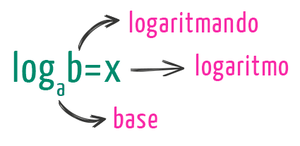
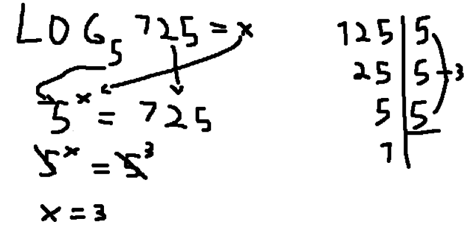

Portfólio de Matemática
Mateus Mazon Parcianello

|
|
Portfólio de Matemática |
Mateus Mazon Parcianello |
|
|---|
Quando uma potência possui expoente negativo, se deve "usar o negativo" do expoente
para transformar
a potência em fração e se for fração se invertem as bases.
Depois disso se faz a exponenciação normalmente.
Exemplo:
Exercício:
Logaritmos consiste em achar o expoente de tal número que origina tal número.
A estrutura é como mostrado abaixo:

Então, se pegarmos uma equação em que a base é 5, o logaritmando é 125,
e o logaritmo é indefinido, se procederia assim:

Nós tentamos igualar a base com o logaritmando, que então ficou 5 elevado a x(que é o logaritmo)
igual ao logaritmando(125). Depois se fez a fatoração do logaritmando, que como é múltiplo da base foi
fácil.
E depois transformamos o logaritmando 125 para 5 elevado a 3, com isso podemos cortar as bases e
o logaritmo ficou igual a 3.
Materiais sobre os conteúdos
Expoente negativo:
Logaritmos
Links encontrados clicando nas imagens